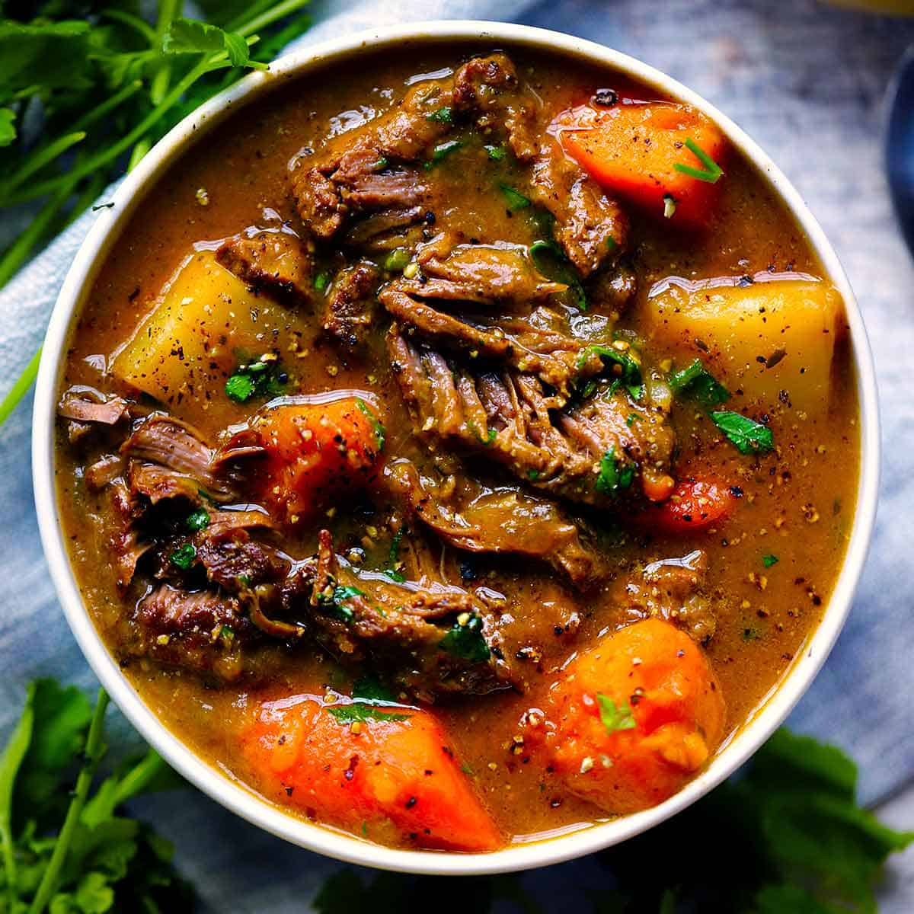

the pride of the irish (lamb stew)

besties allow me to be so fr w u rn. this looks so much better. follow this
recipe instead like.
description
i just straight up stole the recipe from where i work at. yanked a picture of that shit from the bosses
computer in september 2022. yall stay safe out there. is it good?? yes. have i ever made it at home?? no.
but. i would like to. oh what was that-- you want a description?? it's beyond description. words cannot do justice
to the taste sensations culminating on your tongue. from this. irish. lamb. stew. but in all seriousness it's pretty decent.
this food diy instruction makes a lot. itd probably last a family like 2 days or something if it was all they ate.
ingredients
- 1/4 cup olive oil (for mushrooms)
- 2 oz butter (for mushrooms)
- 12 oz mushrooms (chopped)
- -------
- 2 lb. lamb (cooked and cubed)
- 1 qt lamb stock
- 2 tablespoons rosemary (chopped)
- 2 tablespoons thyme (chopped)
- -------
- 1 gallon demi glaze (followed on container)
like the other recipes, this makes a lot
- 1 tablespoon black pepper
- -------
- 1/2 cup olive oil (for vegetables)
- 1 pound, onions (diced)
- 1 pound celery (diced)
- 1 pound carrots (diced)
- 1 ounce butter (for vegetables)
- 1 quart vegetable stock
steps
- in the largest pot (12 qt) add olive oil, butter and mushrooms and saute.
- add in lamb, lamb stock, rosemary, and thyme. let simmer for 20-30 minutes
- prepare demi glaze and add to pot along with black pepper
- bring to light boil to thicken; once thickened, bring down to lowest setting to simmer
- in another pot, saute carrots with olive oil and butter for a few minutes, until barely soft
- add in onions and celery. cook until onions are translucent
- add in vegetable stock and let simmer for 10-15 minutes
- once vegetables are done simmering and the demi glaze is thickened, carefully add in
the vegetables and stock into the demi glaze
- allow stew to simmer for 10-15 minutes before serving